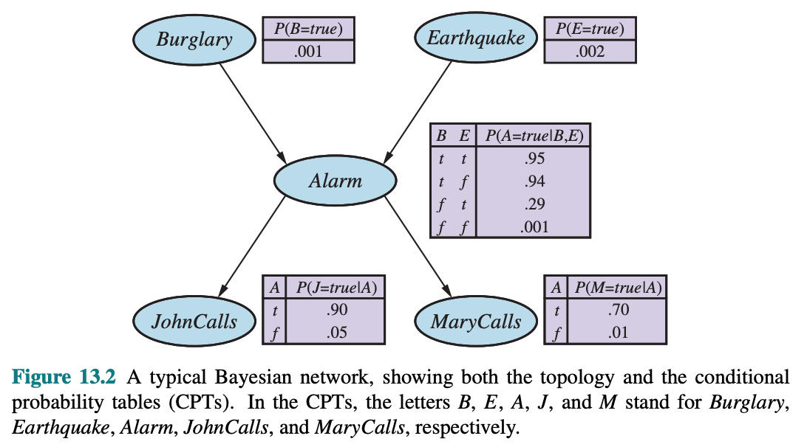

This chapter introduces a way of representing conditional independence relationships in the form of Bayesian Networks.

Figure 1. Bayes Network example.
The semantics define how the syntax corresponds to a joint distribution over the variables of the network.
If a Bayes net contains $n$ variables, $X_1, \dots, X_n$. A generic entry in the joint distribution is then $P(X_1 = x_1 \cap \dots \cap X_n = x_n)$, or $P(x_1, \dots, x_n)$.
Semantics of a Bayes net defines each entry in the joint distribution as $$ \boxed{P(x_1, \dots, x_n) = \prod_{i=1}^n \theta(x_i \mid parents(X_i))} \tag{13.1} \label{eq:joint_distribution} $$ where $parents(X_i)$ denotes the values of $Parents(X_i)$ that appear in $x_1, \dots, x_n$. Thus, each entry in the joint distribution is represented by the product of the appropriate elements of the local conditional distributions in the Bayes net.
For example, using Figure 1 above, if we wanted to calculate the probability that the alarm has sounded, but neither a burglary nor an earthquake has occurred, and both John and Mary call. We would multiply the relevant entries from the local conditional distributions:
$$ \boxed{ \begin{aligned} P(j, m, a, \neg b, \neg e) &= P(j \mid a) P(m \mid a) P(a \mid \neg b \cap \neg e) P (\neg b) P(\neg e)\\ &= 0.90 \times 0.70 \times 0.001 \times 0.999 \times 0.998\\ &= 0.000628 \end{aligned} } $$
The book uses $\eqref{eq:joint_distribution}$ to prove that the parameters $\theta(x_i \mid parents(X_i))$ are exactly the conditional probabilities $P(x_i \mid parents(X_i))$ implied by the joint distribution. Therefore, we can rewrite $\eqref{eq:joint_distribution}$ as $$ \boxed{P(x_1, \dots, x_n) = \prod_{i=1}^n P(x_i \mid parents(X_i))} \tag{13.2} \label{eq:joint_distribution2} $$
We can use $\eqref{eq:joint_distribution2}$ to imply certain conditional independence relationships. We can write each joint probability as a conditional probability, which leaves us with one big product: $$ \boxed{ \begin{aligned} P\left(x_1, \ldots, x_n\right) &=P\left(x_n \mid x_{n-1}, \ldots, x_1\right) P\left(x_{n-1} \mid x_{n-2}, \ldots, x_1\right) \cdots P\left(x_2 \mid x_1\right) P\left(x_1\right) \\ &=\prod_{i=1}^n P\left(x_i \mid x_{i-1}, \ldots, x_1\right) \end{aligned} } $$
This identity is called the chain rule and it holds for any set of random variables. From $\eqref{eq:joint_distribution2}$, we can see that for every variable $X_i$ in the network $$ \boxed{ \textbf{P}(X_i \mid X_{i-1}, \dots, X_1) = \textbf{P}(X_i \mid Parents(X_i)) } \tag{13.3} \label{eq:joint_distribution_i} $$